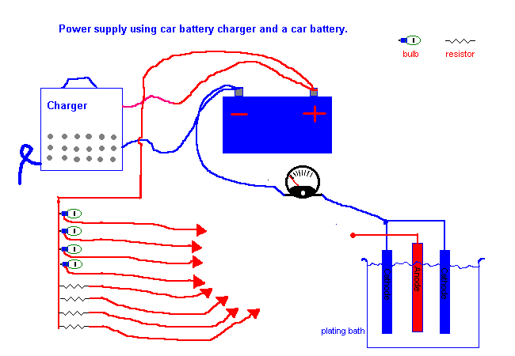

DC Supplies for plating
You need a power supply that has about 3 volts
DC output and can supply the
maximum current you wish to plate at. If you have access to a good lab power
supply that can be set to output a specified current then that is perfect. If
you have access to a simple power supply from say 0 to 16 volts, you will have
to set the current going through the cell carefully and keep an eye on it so
that it does not drift too much.
There can be great confusion regarding what
voltage should be applied to the plating tank for to get the anode to plate. The
voltage should not be what you think in terms of, but rather the current.
Decide what current you need and apply that current to the tank. THAT current
will cause a particular voltage to appear across the tank and that is your
plating voltage. It is not an important figure in itself, all voltages will be
only a few volts. The best type of power supply for plating is a supply having
controlled current characteristics. This sounds rather complicated but it is
not. To make a supply with controlled current characteristic you simply take a
voltage supply (a battery is a good example) and put a fairly large resistor in
series. This gives a supply which is more like a controlled (programmed) current
source.
A good, easy to obtain supply that is also uninterpretable,
is the ubiquitous car battery charger together with a good battery and some 12
volt (car) bulbs. Depending on the wattage of the particular bulb it will allow
only a certain current to flow when put in series with the plating tank. The
current will not be very accurate but good enough for our job. Some 50 and 100
ohm resistors can also be useful for setting the smaller currents. 100 ohms
gives about 100mA.

The bulbs can be
obtained from scrap yard. The wattage of the bulb will give you an idea of what
current will flow when that bulb is in circuit. 21 watts get you about 2 amps,
55 watts gets you about 5 amps. Bulbs can also be put in series to get you a
smaller current if you wish. Any number
of flying leads can be attached to the plating anode.
The computer power supply could also be used. I would recommend using the 12V output with resistors as above.
HIT THE BACK BUTTON ON YOUR BROWSER
BACK TO TOP